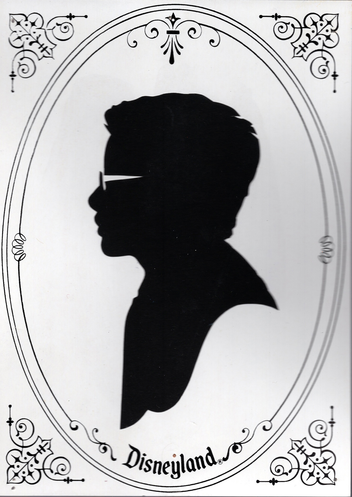
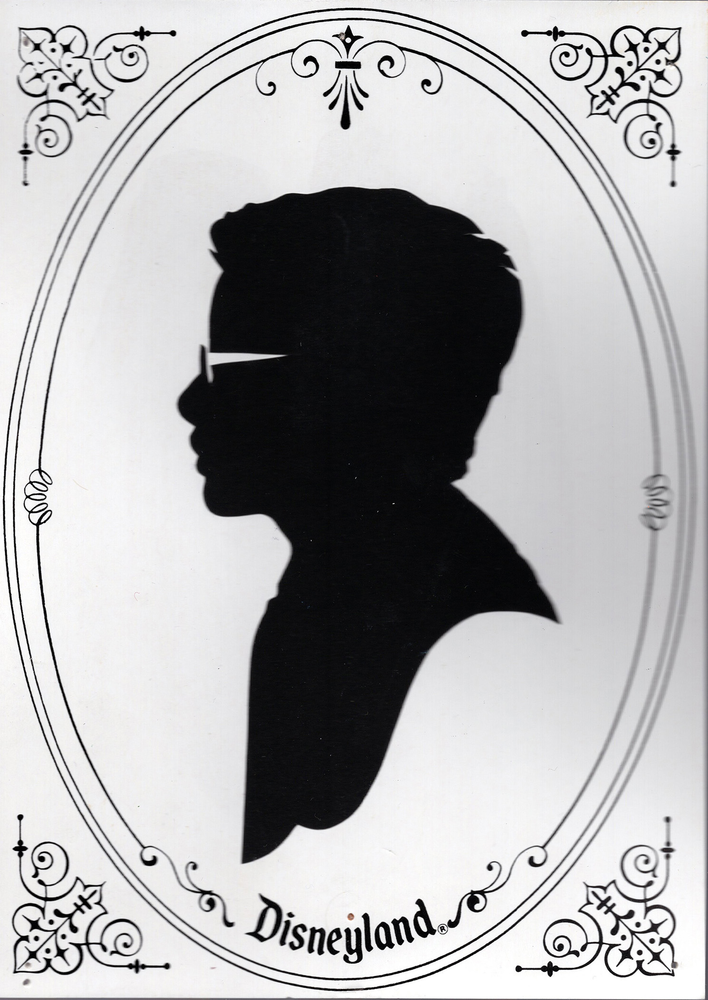

"Fear of Forgetting" is an online exhibition that gives you one hour to interact with the images you see. After the hour is done, the images you didn't interact with will disappear and the ones that remain are yours to print. Save a small piece of memory before its gone.